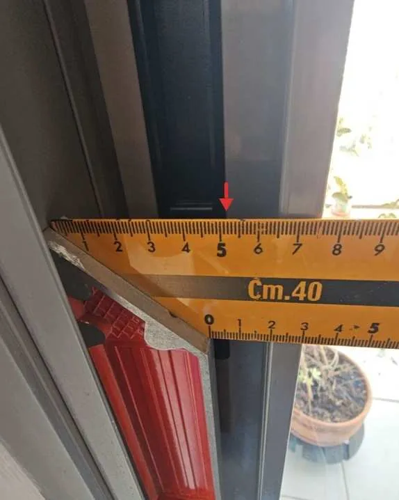

בדק בית לדירה חדשה מקבלן
הקבלן מחויב למסור לכם דירה לפי התוכניות, המפרט והתקנים. הבדיקה מוודאת שזה מה שקיבלתם, והדוח הופך כל ליקוי לדרישה מסודרת לתיקון.
בקצרה
- מתי
- סביב פרוטוקול המסירה, או בתקופת הבדק
- משך הבדיקה
- בדרך כלל שעתיים עד שלוש
- הדוח
- PDF תוך שבוע, בוואטסאפ ובמייל
- כולל
- רשימת ליקויים מסודרת לקבלן, ובדיקה חוזרת אחרי התיקונים לפי תיאום
- המחיר
- לפי השטח הבנוי, סוג הבדיקה וההיקף. הצעת מחיר בוואטסאפ
מתי לבדוק
השלב הנכון הוא רגע לפני מסירת המפתח, בפרוטוקול הראשוני. כך יש לקבלן זמן לתקן לפני שאתם נכנסים.
אם אי אפשר במעמד הזה, כדאי לבדוק סמוך ככל האפשר ליום קבלת החזקה. גרים כבר בדירה? אפשר לבדוק כל עוד תקופת הבדק או האחריות בתוקף.
מה בודקים בדירה חדשה
השוואה מלאה בין מה שהובטח לבין מה שנבנה, ובדיקה של כל מערכות הדירה.
תוכניות ומפרט מול המצב בשטח
מידות, קירות, פתחים ונקודות חשמל ומים, מול תוכנית המכר והמפרט שצורף לחוזה.
סטיות ואי־התאמות
כל מקום שבו הביצוע שונה מהתוכנית.
שלד וסדקים
סדקים ועקמומיות של קירות.
איטום, רטיבות ונזילות
מרפסות וחדרים רטובים, עם מצלמה תרמית ומד לחות.
ריצוף ושיפועים
אריחים חלולים, סדוקים או לא ישרים, שיפועים לניקוז, חיפויי קירות ועבודות שיש.
חשמל
בדיקה ויזואלית של הלוח, השקעים והנקודות.
אלומיניום, מסגרות ונגרות
חלונות, תריסים ודלתות: תפקוד, אטימות וגימור.
גמר
טיח, צבע וגבס.
בטיחות
ממ״ד ומעקות.

מה מקבלים ואיך זה עובד
פונים
שולחים בוואטסאפ סוג נכס, עיר וגודל. רביד חוזר עם שאלות, אם צריך, ועם מועד והצעת מחיר.
בדיקה בנכס
בדרך כלל שעתיים עד שלוש בדירה, בלי לפרק ובלי להרוס, עם ציוד מדידה ומול התוכניות, המפרט והתקנים.
דוח תוך שבוע
כל ממצא מתועד בתמונה, עם מיקום, הסבר והמלצה לתיקון, בסדר שנוח להעביר לקבלן. ה־PDF מגיע תוך שבוע, בוואטסאפ ובמייל.
הסבר וליווי
רביד עובר איתכם על הדוח ועונה על שאלות גם אחריו. אחרי התיקונים אפשר לתאם בדיקה חוזרת.
שאלות על דירה חדשה מקבלן
מה עושים עם הדוח?
מעבירים אותו לקבלן. לפי חוק המכר הקבלן מחויב לטפל בליקויים שזוהו תוך זמן סביר. אחרי התיקונים אפשר לתאם בדיקה נוספת, שמוודאת שהליקויים תוקנו כראוי.
מהי תקופת הבדק והאחריות?
חוק המכר (דירות) קובע תקופת בדק של שנה עד שבע שנים, לפי סוג הליקוי, ואחריה תקופת אחריות של שלוש שנים נוספות. בתקופות האלה הקבלן מחויב לתקן ליקויים, כל עוד לא נגרמו באשמת הרוכש.
מול מה בודקים?
מול מפרט המכר והתוכניות שצורפו לחוזה, התקנים הישראליים, תקנות התכנון והבנייה, הוראות למתקני תברואה (הל״ת) והמפרט הכללי לעבודות בנייה, ״הספר הכחול״. דירה ששונה מהמפרט היא אי־התאמה לפי חוק המכר.
הדירה נראית מושלמת. צריך בכל זאת לבדוק?
כן. גם בדירה חדשה ומבריקה יש ליקויים שמתגלים רק בעין מקצועית או אחרי שימוש: איטום, שיפועים, אינסטלציה וחלונות.
אפשר לבדוק אחרי שכבר נכנסנו?
כן. אפשר לבדוק ולאתר ליקויים כל עוד תקופת הבדק או האחריות בתוקף.
לפני שמקבלים מפתח
שלחו את מועד המסירה, העיר וגודל הדירה, ורביד יחזור אליכם עם מועד והצעת מחיר.
- וואטסאפ וטלפון054-756-0711
- מיילkrudo.handasa@gmail.com
- אזורחיפה והקריות, טבעון והעמק, יקנעם, עפולה ונצרת, עד כ־50 ק״מ מקריית טבעון
פרטים לוואטסאפ
לתיאום בוואטסאפ